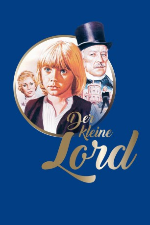

#4819 Der Kleine Lord
Alternativ: Little Lord Fauntleroy
 
 IMDB-Wertung: 7.4 / 10
IMDB-Wertung: 7.4 / 10  Metascore: 0
Metascore: 0 
Der siebenjährige Cedric Errol lebt mit seiner amerikanischen Mutter in sehr bescheidenen Verhältnissen. Eines Tages taucht ein Mann auf und erklärt, dass Cedric der einziger Erbe des Titels und Vermögens seines Großvaters ist. Cedric soll den Titel Lord Fauntleroy erhalten und im Schloss des Großvaters leben und erzogen werden.
Jahr: 1980
Dauer: 99 Minuten
FSK:
Land: England Studio: EuroVideoTonspuren: DD2.0 - ,
Untertitel:
Auflösung: 1080p (1920x1080) Größe: 6707 MB
Genre: Drama, Familie, Liebe, Weihnachten
Regisseur: Jack Gold
Drehbuch: Shen Cheng
Soundtrack:
Darsteller:
 Ricky Schroder als Lord Fauntleroy
Ricky Schroder als Lord Fauntleroy Alec Guinness als Earl of Dorincourt
Alec Guinness als Earl of Dorincourt Colin Blakely als Hobbs
Colin Blakely als Hobbs Connie Booth als Mrs. Errol
Connie Booth als Mrs. Errol- Rachel Kempson als Lady Lorradaile
 Rolf Saxon als Dick
Rolf Saxon als Dick Peter Copley als Rev. Muldaur
Peter Copley als Rev. Muldaur Patsy Rowlands als Mrs. Dibble
Patsy Rowlands als Mrs. Dibble Patrick Stewart als Wilkins
Patrick Stewart als Wilkins- Gerry Cowper als Mellon
- Ballard Berkeley als Sir Harry
 Lucien Morgan als Albert , uncredited
Lucien Morgan als Albert , uncredited Bill Nighy als Officer , uncredited
Bill Nighy als Officer , uncredited- Eric Porter als Havisham
- Carmel McSharry als Mary
- Antonia Pemberton als Dawson
- John Cater als Thomas
 Ann Way als Miss Smith
Ann Way als Miss Smith- Harry Jackson als Hustings
- Edward Wylie als Ben Tipton
- Tony Melody als Kimsey
- Kate Harper als Minna
- Rohan McCullough als Lady Grace
- Dicon Murray als Georgie
- John Southworth als Higgins
- Norman Pitt als Lord Ashby Delefant
Datei: X:\1980\Kleine Lord, Der (1980, FSK, 1920x1080).mkv seit 21.11.2016
Festplatte: HD 1980-1986
 Es gibt insgesamt 33 Filme in der Gruppe '1980'
Es gibt insgesamt 33 Filme in der Gruppe '1980'